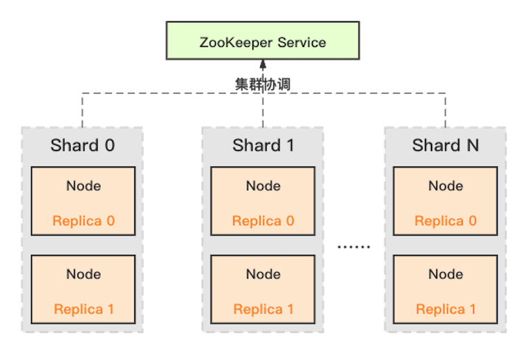

clickhouse初入门
后起之秀Clickhouse
ClickHouse 是 Yandex（俄罗斯最大的搜索引擎）开源的一个用于实时数据分析的基于列存储的数据库，其处理数据的速度比传统方法快 100-1000 倍。ClickHouse 的性能超过了目前市场上可比的面向列的 DBMS，每秒钟每台服务器每秒处理数亿至十亿多行和数十千兆字节的数据
在DB-engines排名上，如下图中红色曲线所示。ClickHouse开源时间虽短，但是增势迅猛
数据模型
1）逻辑模型
从用户使用角度看，ClickHouse 的逻辑数据模型与关系型数据库有一定的相似：一个集群包含多个数据库，一个数据库包含多张表，表用于实际存储数据。
与传统关系型数据库不同的是，ClickHouse 是分布式系统，如何创建分布式表呢？ClickHouse 的设计是：先在每个 Shard （分片）每个节点上创建本地表（即 Shard 的副本），本地表只在对应节点内可见；然后再创建分布式表，映射到前面创建的本地表。这样用户在访问分布式表时，ClickHouse 会自动根据集群架构信息，把请求转发给对应的本地表。创建分布式表的具体样例如下：
# 首先，创建本地表
CREATE TABLE table_local ON CLUSTER cluster_test
( OrderKey UInt32, # 列定义
OrderDate Date, Quantity UInt8,
TotalPrice UInt32, ……
)ENGINE = MergeTree() # 表引擎
PARTITION BY toYYYYMM(OrderDate) # 分区方式
ORDER BY (OrderDate, OrderKey); # 排序方式
SETTINGS index_granularity = 8192; # 数据块大小
# 然后，创建分布式表
CREATE TABLE table_distribute ON CLUSTER cluster_test AS table_localENGINE = Distributed(cluster_test, default, table_local, rand()) # 关系映射引擎其中部分关键概念介绍如下，分区、数据块、排序等概念会在物理存储模型部分展开介绍：
- MergeTree ：ClickHouse 中使用非常多的表引擎，底层采用 类LSM Tree 架构，写入生成的小文件会持续 Merge。
- Distributed ：ClickHouse 中的关系映射引擎，它把分布式表映射到指定集群、数据库下对应的本地表上。
2）物理模型
接下来，我们来介绍每个分片副本内部的物理存储模型，具体如下：
- 数据分区：每个分片副本的内部，数据按照 PARTITION BY 列进行分区，分区以目录的方式管理，本文样例中表按照时间进行分区。
- 列式存储：每个数据分区内部，采用列式存储，每个列涉及两个文件，分别是存储数据的 .bin 文件和存储偏移等索引信息的 .mrk2 文件。
- 数据排序：每个数据分区内部，所有列的数据是按照 ORDER BY 列进行排序的。可以理解为：对于生成这个分区的原始记录行，先按 ORDER BY 列进行排序，然后再按列拆分存储。
- 数据分块：每个列的数据文件中，实际是分块存储的，方便数据压缩及查询裁剪，每个块中的记录数不超过 index_granularity，默认 8192。
- 主键索引：主键默认与 ORDER BY 列一致，或为 ORDER BY 列的前缀。由于整个分区内部是有序的，且切割为数据块存储，ClickHouse 抽取每个数据块第一行的主键，生成一份稀疏的排序索引，可在查询时结合过滤条件快速裁剪数据块。
架构

Shard ：集群内划分为多个分片或分组（Shard 0 … Shard N），通过 Shard 的线性扩展能力，支持海量数据的分布式存储计算。
Node ：每个 Shard 内包含一定数量的节点，同一 Shard 内的节点互为副本，保障数据可靠。ClickHouse 中副本数可按需建设，且逻辑上不同 Shard 内的副本数可不同。
ZooKeeper Service ：集群所有节点对等，节点间通过 ZooKeeper 服务进行分布式协调。
关键技术
列存储：列存储设计思想打破了数据存储常规思维，为海量多维数据分析场景提供了一种新的解决思路
相比于行式存储，列式存储在分析场景下有着许多优良的特性。
1）如前所述，分析场景中往往需要读大量行但是少数几个列。在行存模式下，数据按行连续存储，所有列的数据都存储在一个block中，不参与计算的列在IO时也要全部读出，读取操作被严重放大。而列存模式下，只需要读取参与计算的列即可，极大的减低了IO开销，加速了查询。
2）同一列中的数据属于同一类型，压缩效果显著。列存往往有着高达十倍甚至更高的压缩比，节省了大量的存储空间，降低了存储成本。
3）更高的压缩比意味着更小的data size，从磁盘中读取相应数据耗时更短。
4）自由的压缩算法选择。不同列的数据具有不同的数据类型，适用的压缩算法也就不尽相同。可以针对不同列类型，选择最合适的压缩算法。
5）高压缩比，意味着同等大小的内存能够存放更多数据，系统cache效果更好。
官方数据显示，通过使用列存，在某些分析场景下，能够获得100倍甚至更高的加速效应。
稀疏索引：列存用于裁剪不必要的字段读取，而索引则用于裁剪不必要的记录读取
ClickHouse支持主键索引，它将每列数据按照index granularity（默认8192行）进行划分，每个index granularity的开头第一行被称为一个mark行。主键索引存储该mark行对应的primary key的值，抽取每个块的mark行生成一份稀疏的排序索引，对于where条件中含有primary key的查询，通过对稀疏索引进行二分查找，能够直接定位到对应的index granularity，避免了全表扫描从而加速查询。
另外ClickHouse还支持对任意列创建任意数量的稀疏索引。其中被索引的value可以是任意的合法SQL Expression，并不仅仅局限于对column value本身进行索引。之所以叫稀疏索引，是因为它本质上是对一个完整index granularity（默认8192行）的统计信息，并不会具体记录每一行在文件中的位置。目前支持的稀疏索引类型包括：
- minmax: 以index granularity为单位，存储指定表达式计算后的min、max值；在等值和范围查询中能够帮助快速跳过不满足要求的块，减少IO。
- set(max_rows)：以index granularity为单位，存储指定表达式的distinct value集合，用于快速判断等值查询是否命中该块，减少IO。
- ngrambf_v1(n, size_of_bloom_filter_in_bytes, number_of_hash_functions, random_seed)：将string进行ngram分词后，构建bloom filter，能够优化等值、like、in等查询条件。
- tokenbf_v1(size_of_bloom_filter_in_bytes, number_of_hash_functions, random_seed)： 与ngrambf_v1类似，区别是不使用ngram进行分词，而是通过标点符号进行词语分割。
- bloom_filter([false_positive])：对指定列构建bloom filter，用于加速等值、like、in等查询条件的执行。
编码压缩
由于 ClickHouse 采用列存储，相同列的数据连续存储，且底层数据在存储时是经过排序的，这样数据的局部规律性非常强，有利于获得更高的数据压缩比。
此外，ClickHouse 除了支持 LZ4、ZSTD 等通用压缩算法外，还支持 Delta、DoubleDelta、Gorilla 等专用编码算法，用于进一步提高数据压缩比。
其中 DoubleDelta、Gorilla 是 Facebook 专为时间序数据而设计的编码算法，理论上在列存储环境下，可接近专用时序存储的压缩比。
在实际场景下，ClickHouse 通常可以达到 10 : 1 的压缩比，大幅降低存储成本。同时，超高的压缩比又可以降低存储读取开销、提升系统缓存能力，从而提高查询性能。
向量化执行
采用批量处理模式，可以大幅减少函数调用开销，降低指令、数据的 Cache Miss，提升 CPU 利用效率。并且 ClickHouse 可利用 SIMD （指令多数据流）指令进一步加速执行效率。这部分是 ClickHouse 优于大量同类 OLAP 产品的重要因素。
传统OLTP数据库通常采用按行计算，原因是事务处理中以点查为主，SQL计算量小，实现这些技术的收益不够明显。但是在分析场景下，单个SQL所涉及计算量可能极大，将每行作为一个基本单元进行处理会带来严重的性能损耗：
1）对每一行数据都要调用相应的函数，函数调用开销占比高
2）存储层按列存储数据，在内存中也按列组织，但是计算层按行处理，无法充分利用CPU cache的预读能力，造成CPU Cache miss严重
3）按行处理，无法利用高效的SIMD指令
不足
ClickHouse 作为后起之秀，远没有达到尽善尽美，还有不少需要待完善的方面，典型代表如下：
分布式系统通常包含 3 个重要组成部分：存储引擎、计算引擎、分布式管控层。ClickHouse 有一个非常突出的高性能存储引擎，但在分布式管控层显得较为薄弱，使得运营、使用成本偏高。主要体现在：
分布式表：
ClickHouse 对分布式表的抽象并不完整，在多数分布式系统中，用户仅感知集群和表，对分片和副本的管理透明，而在 ClickHouse 中，用户需要自己去管理分片、副本，例如前面介绍的建表过程：用户需要先创建本地表（分片的副本），然后再创建分布式表，并完成分布式表到本地表的映射。
数据均衡：
ClickHouse 集群自身虽然可以方便的水平增加节点，但并不支持自动的数据均衡。例如，当包含 6 个节点的线上生产集群因存储 或 计算压力大，需要进行扩容时，我们可以方便的扩容到 10 个节点，但是数据并不会自动均衡，需要用户给已有表增加分片 或者 重新建表，再把写入压力重新在整个集群内打散，而存储压力的均衡则依赖于历史数据过期。ClickHouse在弹性伸缩方面的不足，大幅增加了业务在进行水平伸缩时运营压力。
解决思路：
- 复制（复制一张中间表做过渡，然后再删除原表创建新表，clickhouse-copier）
- 调整分片权重（新节点高权重值，旧节点TTL数据被删除，最终所有节点数据趋于均衡之后将新节点权重调整回来）
- 不迁移数据直接扩容（新节点数据写入，旧节点TTL数据被删除，数据均衡花费时间较长，均衡期间压力还是主要分布在旧节点，没有充分发挥分布式优势）
- 腾讯云ClickHouse自动化数据均衡
- 阿里云ClickHouse简单扩容/迁移扩容
故障恢复：
与弹性伸缩类似，在节点故障的情况下，ClickHouse 并不会利用其它机器补齐缺失的副本数据。需要用户先补齐节点后，然后系统再自动在副本间进行数据同步。
计算引擎：
虽然 ClickHouse 在单表性能方面表现非常出色，但是在复杂场景仍有不足。例如：多表关联查询、复杂嵌套子查询等场景下查询性能一般，需要人工优化；缺乏 UDF 等能力，在复杂需求下扩展能力较弱等。这也和 OLAP 系统第三方评测 的结果相符。这对于性能如此出众的存储引擎来说，非常可惜。
实时写入：
ClickHouse 采用类 LSM Tree 架构，并且建议用户通过批量方式进行写入，每个批次不少于 1000 行 或 每秒钟不超过一个批次，从而提高集群写入性能，实际测试情况下，32 vCPU & 128G 内存的情况下，单节点写性能可达 50 MB/s ~ 200 MB/s，对应 5w ~ 20w TPS。
但 ClickHouse 并不适合实时写入，原因在于 ClickHouse 并非典型的 LSM Tree 架构，它没有实现 Memory Table 结构，每批次写入直接落盘作为一棵 Tree（如果单批次过大，会拆分为多棵 Tree），每条记录实时写入会导致底层大量的小文件，影响查询性能。
这使得 ClickHouse 不适合有实时写入需求的业务，通常需要在业务和 ClickHouse 之间引入一层数据缓存层，实现批量写入。
应用场景
俄罗斯最大搜索引擎Yandex Metrica分析（类似与Google Analytics）
用户行为分析：
在网站、App 和游戏中，对用户的点击、时长等使用数据进行收集，导入到云数据仓库 ClickHouse 中，构建用户特征分析大宽表。借助云数据仓库
ClickHouse 的优异查询性能，分析系统进行多维度、多模式分析，快速分析出用户行为特征和规律，为精准营销和会员转化等业务提供强力支持。
企业经营分析：
在企业经营分析中，把规模庞大的业务数据导入到云数据仓库 ClickHouse，对数亿记录或更大规模的大宽表和数百维度的查询，利用Clickhouse来构建实时地交互式报表，实时分析订单、收入、用户数等核心业务指标，提供随时地个性化统计和不间断的分析，辅助商业决策。
新浪微博用于用户行为数据记录和分析
广告业务分析（ClickHouse在字节跳动广告业务中的应用）
信息安全日志分析，网络游戏数据分析，实时特征计算